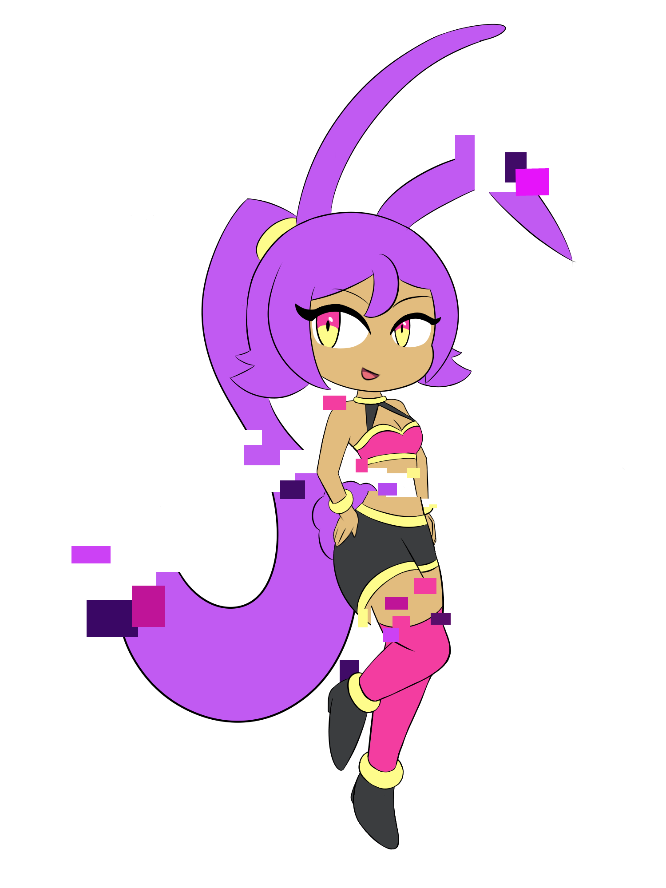

- Name: Code Name Hi-Jynx
- Species: N/A (Possible Nebula Varient)
- Mental Age: 16
- Chronological Age: ≈1
- Gender: Female
- Height: 5'2" ft / 157 cm
A kind person who after finds him self helping his friends get out of trouble. Despite the brave and confidentface he commonly puts on when doing so, he’s someone who worries alot and is scared deep down. His most striking trait is his cyborconitic arm, which is the source of his powers. Capable of absorbing, storing and releasing vast quantities of electricity, he’s a feaces fighter despite he’s small build. More importantly though, he’s able to use that electricity stored to travel though time into the future. Unfortunately, he’s unable to travel back in time however, as it was an experiment to do so that blasted him from the fabric of space time, leading him to crash into the Worldview Observatory. This event is what lead to what Worldview is today however.
- While not having a true race or species due to not really being an organism, she can be seen as a highly advanced type of Nebula, a ball of either that has gained sentience with basic instincts.
- Hi-Jynx is completely incorporeal meaning she completely phases through objects and can’t interact with the material world. She is able to complete electrical circuits, effectively meaning she can turn things on and off.
- Hi-Jynx is inspired by Ghost Type Hatsune Miku from Project Voltage, Adanine from Xenoblade 2, and Shantae from Shantae.
- She has an artificial voice, sounding like a Vocaloid when speaking.
- She originally had a short skirt, but this was changed to shorts in the same style so she could be drawn in a wider range of poses.
- The original program she was created from is unknown in-universe due to a machine Val built that accidentally created her being blown up. The program however was most likely a dating sim, but other options like a Vocaloid or some other entertainment-based program are possible.
- She gets along best with Keoko and Valzilikx the most, due to the unintentional mischief they both cause.